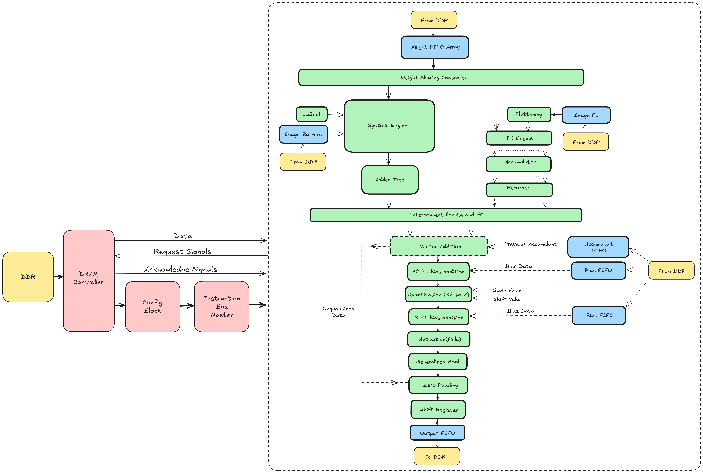
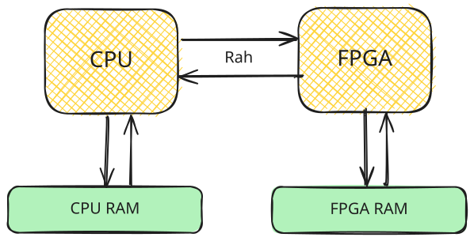
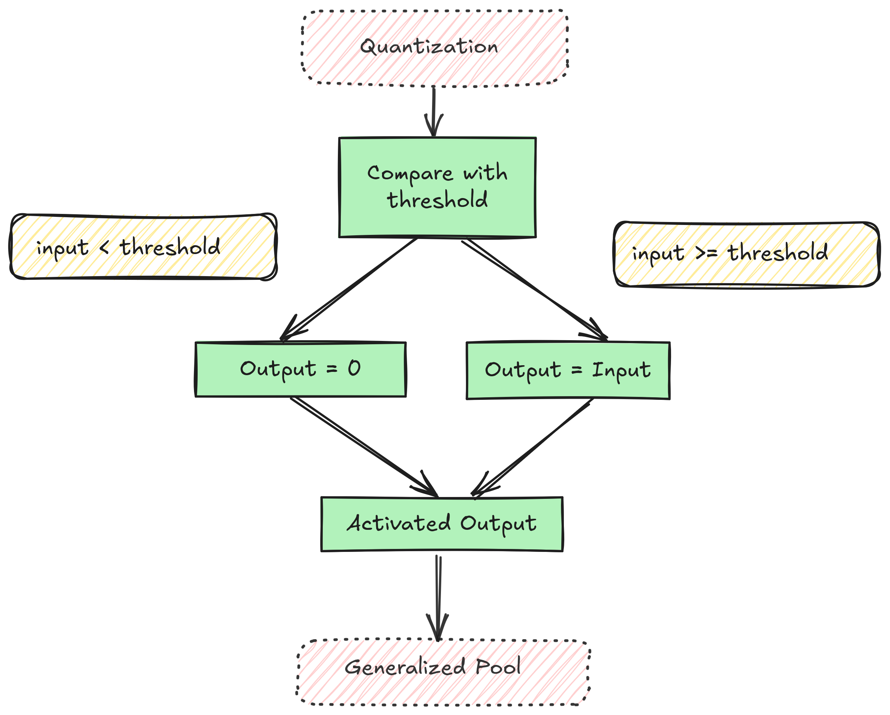
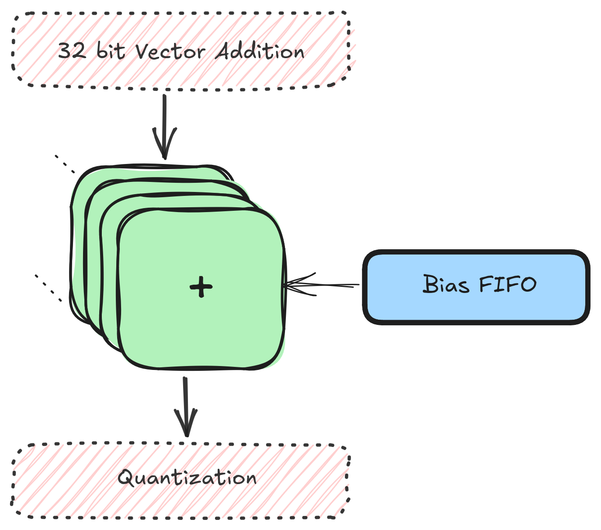
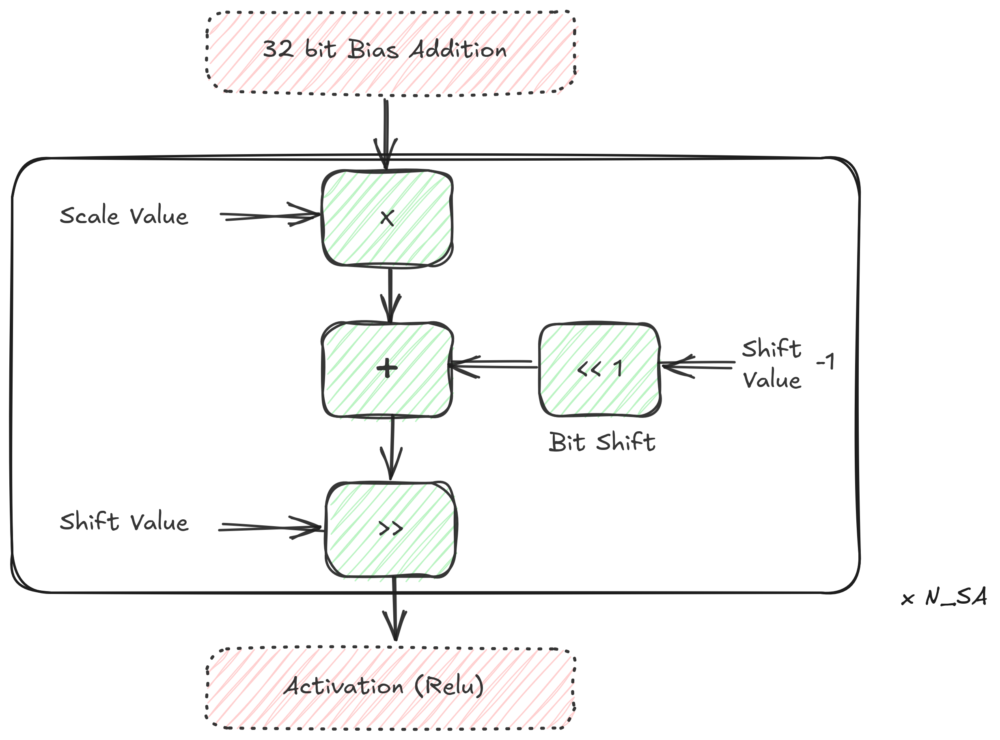
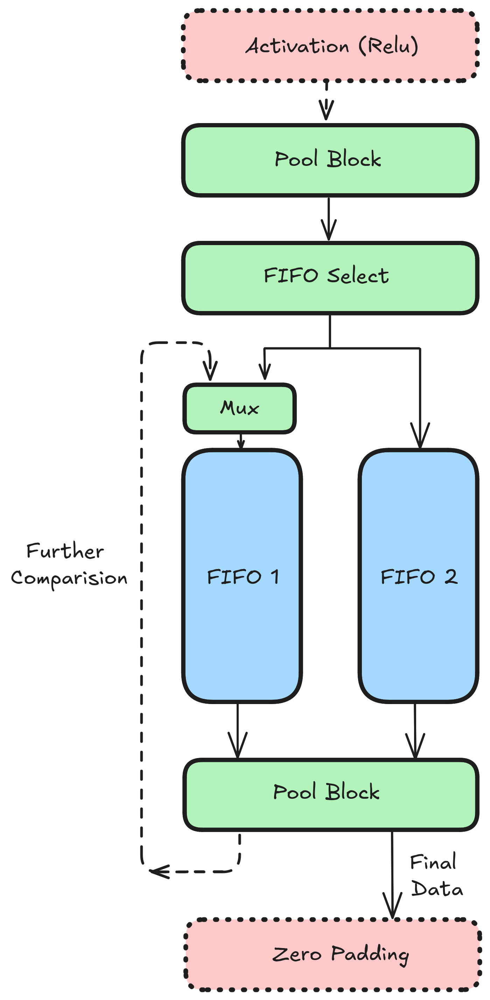
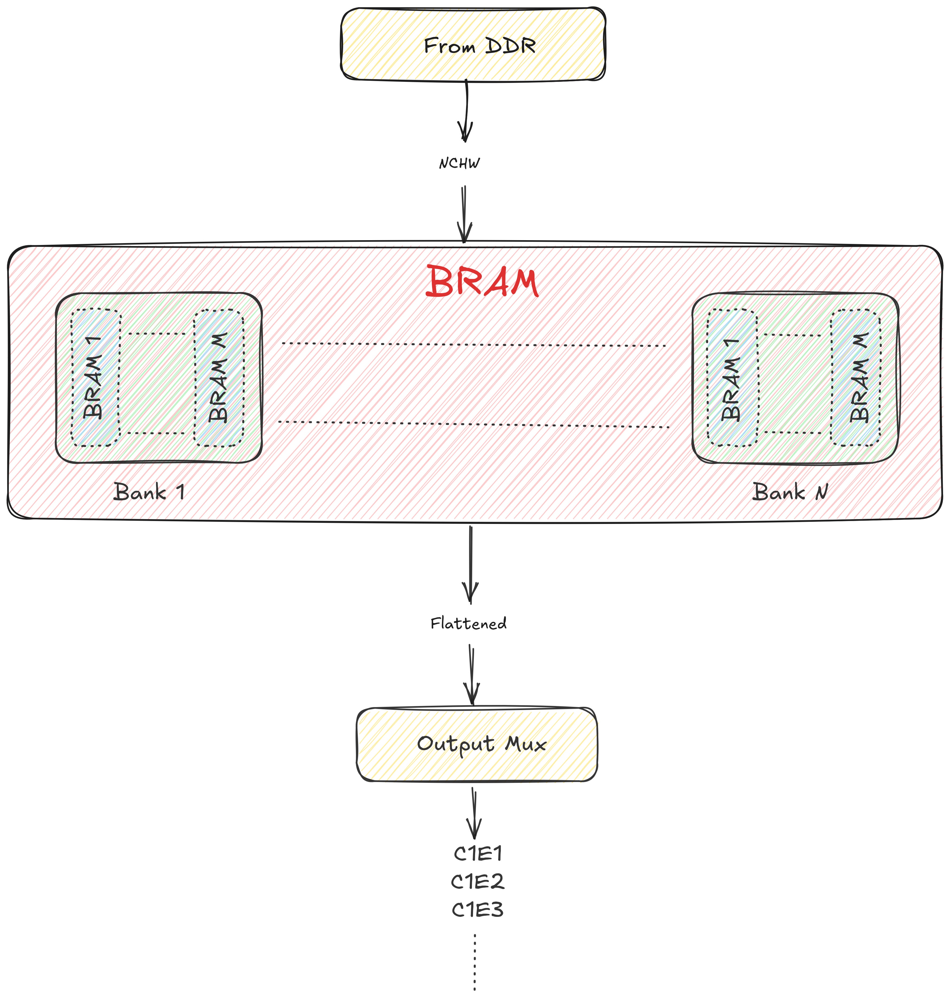
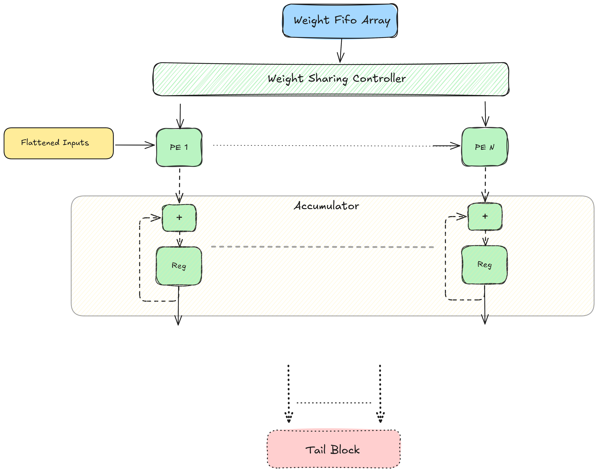
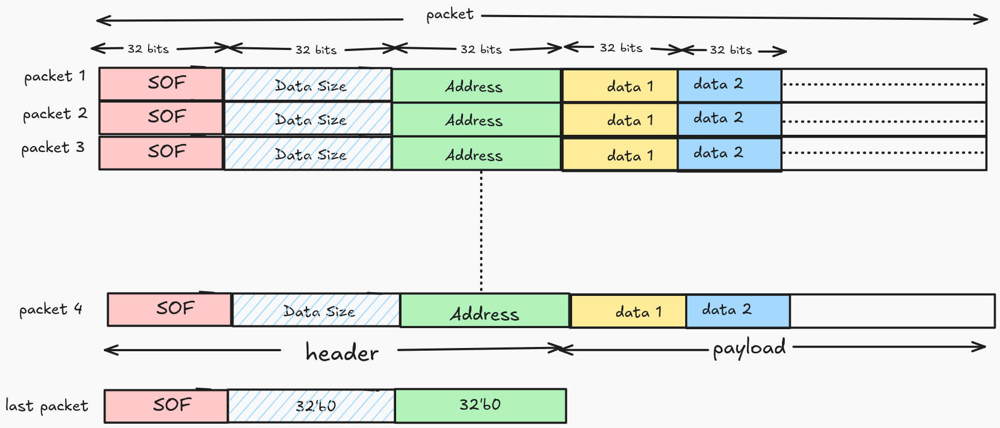

Gati¶
Here’s a Bird’s eye view picture of the entire CNN architecture:
{kind=link}

Following sections describe what each block in the image above does.
ONNX¶
ONNX involves reading the model file on the CPU, transforming (eg, from Row Major Order (NCHW) to Channel First Layout (NHWC)), optimizing (eg, operator fusion), reading images from the user and trasmitting it to the FPGA. This process happens exclusively on the CPU (RK3399).
CPU <-> FPGA¶
Vaaman has the arrangement:
{kind=link}

Communication b/w the CPU and FPGA are carried out by the Rah library. Rah abstracts the underlying MIPI interface.
Input Blocks¶
The input block includes the blocks that read (in most cases) from the DRAM and bring data to the Systolic array. This includes:
Inputs
Weights
Biases
Partial Sums (Accumulants)
Please see Input Blocks for more information.
Systolic Array¶
Gati currently assumes to have 8 units 9x8 weight stationary systolic array. Each of these units is called a compute engine. A compute engine is a 2D grid of processing elements arranged in 9 rows and 8 columns. our choice of 9 rows is because of filter size of VGG16, i.e., 3x3 - having a compute engine that is coherent in size with filter size simplifies the dataflow design; however this could be extended to other filter sizes. each 3x3 filter here can be visualized as a column of 9 elements. Thus all 9 weights of a filter can be exactly fit to compute engine’s column. in 8 columns of compute engine 8 unique filters can be pre-loaded. so, in each of 9x8, first 8 filters are loaded, respective to the engine. After completion of loading weights, each compute engine is set to accept inputs. 8 engines in-parallel accept first 8 channels. partial-sums are collected (and added) before passing to the tail blocks. Tail blocks apply activation functions (e.g. relu), dropout, and perform operations like downsampling (e.g. maxpooling); in some cases (transform to row-major format). Finally, the data is staged in FIFOs to be written back to DRAM.
Systolic Array here is combination of one or many compute engines. current version of SA assumes a weight stationary Processing element for convolution layers and output stationary for fully connected layers. configuration block instructs to switch weight stationary to output stationary. exploring other dataflows (e.g. row stationary) for convolution layers is a future work.
Refer to Systolic Array for more info.
Adder Tree¶
Refer to Adder Tree
Output Block¶
TODO
Tail Blocks¶
BatchNorm¶
BatchNorm is a weighted (4 different weights: mean, var, alpha and beta) block just like the Bias block except the weights are tensors equal in dimension to the previous layer. Batchnorm requires a multiplication and a division of input (x) with constants. This type of operation can usually be fused into previous convolution layers thus reducing the need for a hard-implementation. For eg, an Ofmap of size (96,7,7) would need a batchnorm of dimension (96, 4).
ReLU¶
Relu is a simple piecewise activation function.
{kind=link}

ReLU is implemented as a pipelined block within the hardware accelerator. It processes the output of the convolution operation directly in the pipeline, eliminating the need to write convolution outputs to DRAM and read them back for ReLU computation. This approach minimizes time penalties associated with memory access, ensuring higher efficiency and faster data processing.
Bias¶
Bias is scalar addition operation of a constant with incoming value.
{kind=link}

The bias addition is implemented as a pipelined operation within the hardware accelerator. The bias values, fetched from DRAM by a dedicated bias controller, are added directly to the convolution outputs in the pipeline, ensuring efficient and seamless data processing without additional memory access overhead.
Element Wise Operations¶
The element_wise_op block includes multiple operations that can be done on individual inputs. The current supported element wise operations include:
Addition
Subtraction
multiplication
Sigmoid/Tanh (Refer to Sigmoid/Tanh Module for more info.)
For more info on Element wise operation megablock, refer Element-Wise Processing Block
Resize Operator¶
Refer Resize Operator.
Quantization¶
{kind=link}

Quantization is needed because partial sums from the SA are the result of MAC of multiple 8-bit elements which results in a number that does not fit in 8 bits. This block makes a PS of larger bit-width fit in 8 bits.
Refer to A Deeper Look Into Quantization for more info.
Pooling Network¶
Pool Movement¶
Pooling can be understood as two tasks: movement and action. The movement has parameters: window size, stride and padding that dictate how big the kernel is and how it should be moved across the Ifmap. Action is what has to be done to the values in the kernel. Commonly found actions are Max and Average which gives the name of two popular pool layers: maxpool and average pool.
Following image shows the pooling network:
{kind=link}

The action block can be replaced by any action while leaving the movement (everything other than action) untouched.
Assume a pool of window size (KW, KH), stride (S) and padding (P). Movement works thusly:
Input I (a scalar value) arrives out from the output fifo 2 into the action block.
The action block (discussed later) emits another scale value (after some cycles) and stores into F1.
Once an entire row has been processed, F1 should be filled with some elements and F2 should be empty.
For second and all subsequent rows (till KH), values from action are sent to F2
Once a value enters F2, one value from both fifos F1 and F2 (in the diagram, the values a1 and b1) are sent to the second action block which runs the action on it.
Value from this action block is written back into F1 if the current row is not the last row, else it is sent out from the pooling network.
Pool Actions¶
Max¶
The max operation takes max b/w two values at a time and stores it in a register to use the same value for next comparison. Initially, the value of reg would be 0. This operation is carried out KW times, then the value of reg is emitted out of the Max (action) block.
Average¶
Average b/w N elements requires division by N (a variable) which is not very convenient on the FPGA. Average of a N element array can be cheaply calculated by calculating average of 2 values at a time then averaging these averages. This results in a tree like structure (as represented in lower right corner of the image). Moreover, division by 2 is simply a right shift by 1.
Consider a window size of 6. We need to take 4 averages to calculate an average of 6 elements. Average block works thusly:
Avg of i1 and i2 is calculated (a1) and push to a fifo. In subsequent cycles, average of i3 and i4 is calculated (a2) and also pushed to the fifo.
If the fifo has 2 values, average b/w the two is taken and pushed in the fifo.
This is done till there is only one value left in the fifo. This is the average.
For a odd-numbered window size, say 5, nothing changes except we only have to take one less average. The extra element is pushed as is in the fifo.
Right shift by 2 of a integer divides it but gets rid of the decimal part (.5) which may cause a loss in precision. Empirical evaluation shows that the loss occured is 0.5 to 1.0% of the original which should be acceptable.
Transpose¶
See: Reshape–Transpose
DRAM¶
In the current setting Vaaman’s FPGA (Trion120) has a discrete DRAM attached to it. This is not shared with the CPU (RK3399). DRAM is used to store different types of data in different layouts. These include:
Inputs (images)
Outputs (what becomes the inputs to next layers)
Weights
Accumulants (partial sums b/w iterations that are not yet outputs)
The architecture substantially affects the layout of the DRAM. So, one layout would not work for every model. Weights are read-only i.e. once written in the DRAM at the beginning of the computation, they are only read by the FPGA, never written to. Therefore weight data can be transposed in expected order by the CPU, and sent to the FPGA. Inputs/Outputs are read/write, therefore transpositions on them happens once, at the start, on CPU and later by the FPGA.
For concrete details on the layout and access pattern, see DDR Layout and Access Patterns.
For implementation of memory controller, see DRAM Controller
Configuration Block/Bus master controller¶
Configuration block stores required configurations for each layers and programs input, output, and tail blocks ahead of time so that they can immediately switch to new settings after completion of the current layer and start processing next layer.
Each table above shows a config packet of 256 bits. Understand these packets as instructions where the instruction width is 256. None of the above configs currently take all 256 bits, this is not a problem, these least significant remaining bits can be assumed to be reserved.
The Bus Master Controller facilitates communication between a master device and multiple slave devices within a system. It transmits the instruction set from the config block to different compute block.
For implementation details of config block/Bus master controller, see Configuration Block or implementation of memory controller, see DRAM Controller
`define OP_CONV 'h00
// Opcode
`define CONV_Opcode 3:0
`define CONV_Opcode_WIDTH 4
// Width of the input image
`define CONV_IW 13:4
`define CONV_IW_WIDTH 10
// Height of the input image
`define CONV_IH 23:14
`define CONV_IH_WIDTH 10
// Width of the output feature map
`define CONV_OW 33:24
`define CONV_OW_WIDTH 10
// Height of the output feature map
`define CONV_OH 43:34
`define CONV_OH_WIDTH 10
// Channel count for the input
`define CONV_IC 53:44
`define CONV_IC_WIDTH 10
// Kernel count for the input
`define CONV_KN 63:54
`define CONV_KN_WIDTH 10
// Kernel width
`define CONV_KW 67:64
`define CONV_KW_WIDTH 4
// Kernel Height
`define CONV_KH 71:68
`define CONV_KH_WIDTH 4
`define CONV_Stride 75:72
`define CONV_Stride_WIDTH 4
`define CONV_Pad 78:76
`define CONV_Pad_WIDTH 3
// Bit vector where each bit represents a side (left,bottom,rig
// ht,top) of a feature map that should be padded with 'Pad'
`define CONV_PadSides 82:79
`define CONV_PadSides_WIDTH 4
`define CONV_ImageStartAddress 114:83
`define CONV_ImageStartAddress_WIDTH 32
`define CONV_ImageEndAddress 146:115
`define CONV_ImageEndAddress_WIDTH 32
`define CONV_WeightStartAddress 178:147
`define CONV_WeightStartAddress_WIDTH 32
`define CONV_WeightEndAddress 210:179
`define CONV_WeightEndAddress_WIDTH 32
`define OP_FC 'h03
`define FC_Opcode 3:0
`define FC_Opcode_WIDTH 4
`define FC_WeightRows 19:4
`define FC_WeightRows_WIDTH 16
`define FC_WeightCols 35:20
`define FC_WeightCols_WIDTH 16
`define FC_InputRows 51:36
`define FC_InputRows_WIDTH 16
`define FC_DropoutConstant 59:52
`define FC_DropoutConstant_WIDTH 8
// If this FC follows a CONV, the outputs of conv should be fla
// ttened, this bit signals flattening
`define FC_Flatten 60:60
`define FC_Flatten_WIDTH 1
// If flatten is 1, this is the Height x Width of the previous
// conv. For example, if conv output is 128x7x7, ImageDim will
// be 49
`define FC_ImageDim 80:61
`define FC_ImageDim_WIDTH 20
`define FC_ImageStartAddress 112:81
`define FC_ImageStartAddress_WIDTH 32
`define FC_ImageEndAddr 144:113
`define FC_ImageEndAddr_WIDTH 32
`define FC_WeightStartAddress 176:145
`define FC_WeightStartAddress_WIDTH 32
`define FC_WeightEndAddress 208:177
`define FC_WeightEndAddress_WIDTH 32
// Input vector (say of size 4096) can be seen to be a matrix o
// f size 32x128, vec2mat cols is the number of cols of this ma
// trix i.e. 128
`define FC_Vec2MatCols 224:209
`define FC_Vec2MatCols_WIDTH 16
`define OP_OutputBlock 'h02
`define OutputBlock_Opcode 3:0
`define OutputBlock_Opcode_WIDTH 4
`define OutputBlock_AccumulantAddr 35:4
`define OutputBlock_AccumulantAddr_WIDTH 32
`define OutputBlock_OutputAddr 67:36
`define OutputBlock_OutputAddr_WIDTH 32
`define OutputBlock_ChannelItr 79:68
`define OutputBlock_ChannelItr_WIDTH 12
`define OutputBlock_KernelItr 91:80
`define OutputBlock_KernelItr_WIDTH 12
// Following the SA, there are tail blocks. Some of the tail bl
// ocks like maxpool modify the shape of the output, this field
// accounts for that. In cases, when shape is not modified, th
// is field is equal to ImageDimAcc
`define OutputBlock_ImageDimOutput 107:92
`define OutputBlock_ImageDimOutput_WIDTH 16
// Output of the conv operation (HxW)
`define OutputBlock_ImageDimAcc 123:108
`define OutputBlock_ImageDimAcc_WIDTH 16
// For layer with fewer channels than number of columns in the
// systolic array, accumulation of partial sums across iteratio
// ns is disabled
`define OutputBlock_AccEn 124:124
`define OutputBlock_AccEn_WIDTH 1
// If this layer's output is supposed to be sent back to the CP
// U, this flag is set
`define OutputBlock_DispatchEn 125:125
`define OutputBlock_DispatchEn_WIDTH 1
// This is a integrity id that the FPGA should attach to the Ad
// dr part of the receiving DWP packet.
`define OutputBlock_DispatchID 157:126
`define OutputBlock_DispatchID_WIDTH 32
// If output dimensions of a conv operation can fit on the FPGA
// output buffers, they should not be sent to the DRAM, all of
// the conv can happen on chip saving latency. This flag sets
// that bit.
`define OutputBlock_OnChipAcc 158:158
`define OutputBlock_OnChipAcc_WIDTH 1
`define OP_START 'hf
`define START_Opcode 3:0
`define START_Opcode_WIDTH 4
`define START_LayerNumber 15:4
`define START_LayerNumber_WIDTH 12
`define START_TotalLayers 27:16
`define START_TotalLayers_WIDTH 12
`define OP_TailBlock 'h01
`define TailBlock_Opcode 3:0
`define TailBlock_Opcode_WIDTH 4
// Batch Norm Yes/No
`define TailBlock_BNEn 4:4
`define TailBlock_BNEn_WIDTH 1
`define TailBlock_BNChannels 14:5
`define TailBlock_BNChannels_WIDTH 10
`define TailBlock_BNStartAddress 46:15
`define TailBlock_BNStartAddress_WIDTH 32
`define TailBlock_BNEndAddress 78:47
`define TailBlock_BNEndAddress_WIDTH 32
`define TailBlock_ActEn 79:79
`define TailBlock_ActEn_WIDTH 1
`define TailBlock_ActType 83:80
`define TailBlock_ActType_WIDTH 4
`define TailBlock_ActParam 91:84
`define TailBlock_ActParam_WIDTH 8
`define TailBlock_QuantEn 92:92
`define TailBlock_QuantEn_WIDTH 1
`define TailBlock_QuantScale 108:93
`define TailBlock_QuantScale_WIDTH 16
`define TailBlock_QuantShift 113:109
`define TailBlock_QuantShift_WIDTH 5
`define TailBlock_PoolEn 114:114
`define TailBlock_PoolEn_WIDTH 1
`define TailBlock_PoolType 117:115
`define TailBlock_PoolType_WIDTH 3
`define TailBlock_PoolWidth 127:118
`define TailBlock_PoolWidth_WIDTH 10
`define TailBlock_PoolHeight 137:128
`define TailBlock_PoolHeight_WIDTH 10
`define TailBlock_PoolStride 141:138
`define TailBlock_PoolStride_WIDTH 4
`define TailBlock_PoolPadding 145:142
`define TailBlock_PoolPadding_WIDTH 4
`define TailBlock_PoolCeil 146:146
`define TailBlock_PoolCeil_WIDTH 1
// For pools with input size that is not evenly divisible by ke
// rnel size, mod count is the ceil(input % kernel). For exampl
// e, 21x21 for kernel 2x2, mod count is 1 i.e. 1 extra column
// to be considered.
`define TailBlock_PoolModCount 150:147
`define TailBlock_PoolModCount_WIDTH 4
// Same as PadSides for convolution
`define TailBlock_PoolPadSides 154:151
`define TailBlock_PoolPadSides_WIDTH 4
`define TailBlock_BiasEn 155:155
`define TailBlock_BiasEn_WIDTH 1
// There are two known bias widths 8/32. This is that field.
`define TailBlock_BiasWidth 163:156
`define TailBlock_BiasWidth_WIDTH 8
`define TailBlock_BiasStartAddress 195:164
`define TailBlock_BiasStartAddress_WIDTH 32
`define TailBlock_BiasEndAddress 227:196
`define TailBlock_BiasEndAddress_WIDTH 32
`define ACT_RELU 'h00
`define POOL_MAX 'h00
`define POOL_AVERAGE 'h01
`define POOL_GLOBAL_AVG 'h02
`define WORD_SIZE 32
`define ACC_SIZE 32
`define GATI_INST_ORG 0
`define DWP_HEADER_BYTES 12
`define DWP_PACKET_SZ 4
`define DWP_SOP 'hffffffff
`define DWP_SOP_INDEX 0
`define DWP_DS_INDEX 1
`define DWP_ADDR_INDEX 2
`define META_SOP 'hffffffffffff
`define META_TYPE_RESET 'h00000000
`define META_TYPE_DISPATCH 'h00000001
`define META_TYPE_PAYLOAD_SIZE 'h00000002
`define META_TYPE_INST_ORIGIN 'h00000003
`define META_CONST_DISPATCH_RAH 'h00000000
`define META_CONST_DISPATCH_UART 'h00000001
`define ZerothStartAddress 31:0
`define ZerothStartAddress_WIDTH 32
`define ZerothEndAddress 63:32
`define ZerothEndAddress_WIDTH 32
#define OP_CONV 0x00
// Opcode
#define CONV_Opcode_LOW 0
#define CONV_Opcode_HIGH 3
#define CONV_Opcode_COUNT 4
// Width of the input image
#define CONV_IW_LOW 4
#define CONV_IW_HIGH 13
#define CONV_IW_COUNT 10
// Height of the input image
#define CONV_IH_LOW 14
#define CONV_IH_HIGH 23
#define CONV_IH_COUNT 10
// Width of the output feature map
#define CONV_OW_LOW 24
#define CONV_OW_HIGH 33
#define CONV_OW_COUNT 10
// Height of the output feature map
#define CONV_OH_LOW 34
#define CONV_OH_HIGH 43
#define CONV_OH_COUNT 10
// Channel count for the input
#define CONV_IC_LOW 44
#define CONV_IC_HIGH 53
#define CONV_IC_COUNT 10
// Kernel count for the input
#define CONV_KN_LOW 54
#define CONV_KN_HIGH 63
#define CONV_KN_COUNT 10
// Kernel width
#define CONV_KW_LOW 64
#define CONV_KW_HIGH 67
#define CONV_KW_COUNT 4
// Kernel Height
#define CONV_KH_LOW 68
#define CONV_KH_HIGH 71
#define CONV_KH_COUNT 4
#define CONV_Stride_LOW 72
#define CONV_Stride_HIGH 75
#define CONV_Stride_COUNT 4
#define CONV_Pad_LOW 76
#define CONV_Pad_HIGH 78
#define CONV_Pad_COUNT 3
// Bit vector where each bit represents a side (left,bottom,rig
// ht,top) of a feature map that should be padded with 'Pad'
#define CONV_PadSides_LOW 79
#define CONV_PadSides_HIGH 82
#define CONV_PadSides_COUNT 4
#define CONV_ImageStartAddress_LOW 83
#define CONV_ImageStartAddress_HIGH 114
#define CONV_ImageStartAddress_COUNT 32
#define CONV_ImageEndAddress_LOW 115
#define CONV_ImageEndAddress_HIGH 146
#define CONV_ImageEndAddress_COUNT 32
#define CONV_WeightStartAddress_LOW 147
#define CONV_WeightStartAddress_HIGH 178
#define CONV_WeightStartAddress_COUNT 32
#define CONV_WeightEndAddress_LOW 179
#define CONV_WeightEndAddress_HIGH 210
#define CONV_WeightEndAddress_COUNT 32
#define OP_FC 0x03
#define FC_Opcode_LOW 0
#define FC_Opcode_HIGH 3
#define FC_Opcode_COUNT 4
#define FC_WeightRows_LOW 4
#define FC_WeightRows_HIGH 19
#define FC_WeightRows_COUNT 16
#define FC_WeightCols_LOW 20
#define FC_WeightCols_HIGH 35
#define FC_WeightCols_COUNT 16
#define FC_InputRows_LOW 36
#define FC_InputRows_HIGH 51
#define FC_InputRows_COUNT 16
#define FC_DropoutConstant_LOW 52
#define FC_DropoutConstant_HIGH 59
#define FC_DropoutConstant_COUNT 8
// If this FC follows a CONV, the outputs of conv should be fla
// ttened, this bit signals flattening
#define FC_Flatten_LOW 60
#define FC_Flatten_HIGH 60
#define FC_Flatten_COUNT 1
// If flatten is 1, this is the Height x Width of the previous
// conv. For example, if conv output is 128x7x7, ImageDim will
// be 49
#define FC_ImageDim_LOW 61
#define FC_ImageDim_HIGH 80
#define FC_ImageDim_COUNT 20
#define FC_ImageStartAddress_LOW 81
#define FC_ImageStartAddress_HIGH 112
#define FC_ImageStartAddress_COUNT 32
#define FC_ImageEndAddr_LOW 113
#define FC_ImageEndAddr_HIGH 144
#define FC_ImageEndAddr_COUNT 32
#define FC_WeightStartAddress_LOW 145
#define FC_WeightStartAddress_HIGH 176
#define FC_WeightStartAddress_COUNT 32
#define FC_WeightEndAddress_LOW 177
#define FC_WeightEndAddress_HIGH 208
#define FC_WeightEndAddress_COUNT 32
// Input vector (say of size 4096) can be seen to be a matrix o
// f size 32x128, vec2mat cols is the number of cols of this ma
// trix i.e. 128
#define FC_Vec2MatCols_LOW 209
#define FC_Vec2MatCols_HIGH 224
#define FC_Vec2MatCols_COUNT 16
#define OP_OutputBlock 0x02
#define OutputBlock_Opcode_LOW 0
#define OutputBlock_Opcode_HIGH 3
#define OutputBlock_Opcode_COUNT 4
#define OutputBlock_AccumulantAddr_LOW 4
#define OutputBlock_AccumulantAddr_HIGH 35
#define OutputBlock_AccumulantAddr_COUNT 32
#define OutputBlock_OutputAddr_LOW 36
#define OutputBlock_OutputAddr_HIGH 67
#define OutputBlock_OutputAddr_COUNT 32
#define OutputBlock_ChannelItr_LOW 68
#define OutputBlock_ChannelItr_HIGH 79
#define OutputBlock_ChannelItr_COUNT 12
#define OutputBlock_KernelItr_LOW 80
#define OutputBlock_KernelItr_HIGH 91
#define OutputBlock_KernelItr_COUNT 12
// Following the SA, there are tail blocks. Some of the tail bl
// ocks like maxpool modify the shape of the output, this field
// accounts for that. In cases, when shape is not modified, th
// is field is equal to ImageDimAcc
#define OutputBlock_ImageDimOutput_LOW 92
#define OutputBlock_ImageDimOutput_HIGH 107
#define OutputBlock_ImageDimOutput_COUNT 16
// Output of the conv operation (HxW)
#define OutputBlock_ImageDimAcc_LOW 108
#define OutputBlock_ImageDimAcc_HIGH 123
#define OutputBlock_ImageDimAcc_COUNT 16
// For layer with fewer channels than number of columns in the
// systolic array, accumulation of partial sums across iteratio
// ns is disabled
#define OutputBlock_AccEn_LOW 124
#define OutputBlock_AccEn_HIGH 124
#define OutputBlock_AccEn_COUNT 1
// If this layer's output is supposed to be sent back to the CP
// U, this flag is set
#define OutputBlock_DispatchEn_LOW 125
#define OutputBlock_DispatchEn_HIGH 125
#define OutputBlock_DispatchEn_COUNT 1
// This is a integrity id that the FPGA should attach to the Ad
// dr part of the receiving DWP packet.
#define OutputBlock_DispatchID_LOW 126
#define OutputBlock_DispatchID_HIGH 157
#define OutputBlock_DispatchID_COUNT 32
// If output dimensions of a conv operation can fit on the FPGA
// output buffers, they should not be sent to the DRAM, all of
// the conv can happen on chip saving latency. This flag sets
// that bit.
#define OutputBlock_OnChipAcc_LOW 158
#define OutputBlock_OnChipAcc_HIGH 158
#define OutputBlock_OnChipAcc_COUNT 1
#define OP_START 0xf
#define START_Opcode_LOW 0
#define START_Opcode_HIGH 3
#define START_Opcode_COUNT 4
#define START_LayerNumber_LOW 4
#define START_LayerNumber_HIGH 15
#define START_LayerNumber_COUNT 12
#define START_TotalLayers_LOW 16
#define START_TotalLayers_HIGH 27
#define START_TotalLayers_COUNT 12
#define OP_TailBlock 0x01
#define TailBlock_Opcode_LOW 0
#define TailBlock_Opcode_HIGH 3
#define TailBlock_Opcode_COUNT 4
// Batch Norm Yes/No
#define TailBlock_BNEn_LOW 4
#define TailBlock_BNEn_HIGH 4
#define TailBlock_BNEn_COUNT 1
#define TailBlock_BNChannels_LOW 5
#define TailBlock_BNChannels_HIGH 14
#define TailBlock_BNChannels_COUNT 10
#define TailBlock_BNStartAddress_LOW 15
#define TailBlock_BNStartAddress_HIGH 46
#define TailBlock_BNStartAddress_COUNT 32
#define TailBlock_BNEndAddress_LOW 47
#define TailBlock_BNEndAddress_HIGH 78
#define TailBlock_BNEndAddress_COUNT 32
#define TailBlock_ActEn_LOW 79
#define TailBlock_ActEn_HIGH 79
#define TailBlock_ActEn_COUNT 1
#define TailBlock_ActType_LOW 80
#define TailBlock_ActType_HIGH 83
#define TailBlock_ActType_COUNT 4
#define TailBlock_ActParam_LOW 84
#define TailBlock_ActParam_HIGH 91
#define TailBlock_ActParam_COUNT 8
#define TailBlock_QuantEn_LOW 92
#define TailBlock_QuantEn_HIGH 92
#define TailBlock_QuantEn_COUNT 1
#define TailBlock_QuantScale_LOW 93
#define TailBlock_QuantScale_HIGH 108
#define TailBlock_QuantScale_COUNT 16
#define TailBlock_QuantShift_LOW 109
#define TailBlock_QuantShift_HIGH 113
#define TailBlock_QuantShift_COUNT 5
#define TailBlock_PoolEn_LOW 114
#define TailBlock_PoolEn_HIGH 114
#define TailBlock_PoolEn_COUNT 1
#define TailBlock_PoolType_LOW 115
#define TailBlock_PoolType_HIGH 117
#define TailBlock_PoolType_COUNT 3
#define TailBlock_PoolWidth_LOW 118
#define TailBlock_PoolWidth_HIGH 127
#define TailBlock_PoolWidth_COUNT 10
#define TailBlock_PoolHeight_LOW 128
#define TailBlock_PoolHeight_HIGH 137
#define TailBlock_PoolHeight_COUNT 10
#define TailBlock_PoolStride_LOW 138
#define TailBlock_PoolStride_HIGH 141
#define TailBlock_PoolStride_COUNT 4
#define TailBlock_PoolPadding_LOW 142
#define TailBlock_PoolPadding_HIGH 145
#define TailBlock_PoolPadding_COUNT 4
#define TailBlock_PoolCeil_LOW 146
#define TailBlock_PoolCeil_HIGH 146
#define TailBlock_PoolCeil_COUNT 1
// For pools with input size that is not evenly divisible by ke
// rnel size, mod count is the ceil(input % kernel). For exampl
// e, 21x21 for kernel 2x2, mod count is 1 i.e. 1 extra column
// to be considered.
#define TailBlock_PoolModCount_LOW 147
#define TailBlock_PoolModCount_HIGH 150
#define TailBlock_PoolModCount_COUNT 4
// Same as PadSides for convolution
#define TailBlock_PoolPadSides_LOW 151
#define TailBlock_PoolPadSides_HIGH 154
#define TailBlock_PoolPadSides_COUNT 4
#define TailBlock_BiasEn_LOW 155
#define TailBlock_BiasEn_HIGH 155
#define TailBlock_BiasEn_COUNT 1
// There are two known bias widths 8/32. This is that field.
#define TailBlock_BiasWidth_LOW 156
#define TailBlock_BiasWidth_HIGH 163
#define TailBlock_BiasWidth_COUNT 8
#define TailBlock_BiasStartAddress_LOW 164
#define TailBlock_BiasStartAddress_HIGH 195
#define TailBlock_BiasStartAddress_COUNT 32
#define TailBlock_BiasEndAddress_LOW 196
#define TailBlock_BiasEndAddress_HIGH 227
#define TailBlock_BiasEndAddress_COUNT 32
#define ACT_RELU 0x00
#define POOL_MAX 0x00
#define POOL_AVERAGE 0x01
#define POOL_GLOBAL_AVG 0x02
#define WORD_SIZE 32
#define ACC_SIZE 32
#define GATI_INST_ORG 0
#define DWP_HEADER_BYTES 12
#define DWP_PACKET_SZ 4
#define DWP_SOP 0xffffffff
#define DWP_SOP_INDEX 0
#define DWP_DS_INDEX 1
#define DWP_ADDR_INDEX 2
#define META_SOP 0xffffffffffff
#define META_TYPE_RESET 0x00000000
#define META_TYPE_DISPATCH 0x00000001
#define META_TYPE_PAYLOAD_SIZE 0x00000002
#define META_TYPE_INST_ORIGIN 0x00000003
#define META_CONST_DISPATCH_RAH 0x00000000
#define META_CONST_DISPATCH_UART 0x00000001
#define ZerothStartAddress_LOW 0
#define ZerothStartAddress_HIGH 31
#define ZerothStartAddress_COUNT 32
#define ZerothEndAddress_LOW 32
#define ZerothEndAddress_HIGH 63
#define ZerothEndAddress_COUNT 32
struct Table {
std::map<std::string, int> tbl;
std::vector<std::string> order;
};
void print_table(const Table &tbl);
inline Table get_conv_table(const std::bitset<INST_SIZE_BITS>& inst) {
Table tbl;
tbl.tbl.insert({"Opcode", bitset_range_get<CONV_Opcode_COUNT, INST_SIZE_BITS>(inst, CONV_Opcode_LOW, CONV_Opcode_HIGH)});
tbl.order.push_back("Opcode");
tbl.tbl.insert({"IW", bitset_range_get<CONV_IW_COUNT, INST_SIZE_BITS>(inst, CONV_IW_LOW, CONV_IW_HIGH)});
tbl.order.push_back("IW");
tbl.tbl.insert({"IH", bitset_range_get<CONV_IH_COUNT, INST_SIZE_BITS>(inst, CONV_IH_LOW, CONV_IH_HIGH)});
tbl.order.push_back("IH");
tbl.tbl.insert({"OW", bitset_range_get<CONV_OW_COUNT, INST_SIZE_BITS>(inst, CONV_OW_LOW, CONV_OW_HIGH)});
tbl.order.push_back("OW");
tbl.tbl.insert({"OH", bitset_range_get<CONV_OH_COUNT, INST_SIZE_BITS>(inst, CONV_OH_LOW, CONV_OH_HIGH)});
tbl.order.push_back("OH");
tbl.tbl.insert({"IC", bitset_range_get<CONV_IC_COUNT, INST_SIZE_BITS>(inst, CONV_IC_LOW, CONV_IC_HIGH)});
tbl.order.push_back("IC");
tbl.tbl.insert({"KN", bitset_range_get<CONV_KN_COUNT, INST_SIZE_BITS>(inst, CONV_KN_LOW, CONV_KN_HIGH)});
tbl.order.push_back("KN");
tbl.tbl.insert({"KW", bitset_range_get<CONV_KW_COUNT, INST_SIZE_BITS>(inst, CONV_KW_LOW, CONV_KW_HIGH)});
tbl.order.push_back("KW");
tbl.tbl.insert({"KH", bitset_range_get<CONV_KH_COUNT, INST_SIZE_BITS>(inst, CONV_KH_LOW, CONV_KH_HIGH)});
tbl.order.push_back("KH");
tbl.tbl.insert({"Stride", bitset_range_get<CONV_Stride_COUNT, INST_SIZE_BITS>(inst, CONV_Stride_LOW, CONV_Stride_HIGH)});
tbl.order.push_back("Stride");
tbl.tbl.insert({"Pad", bitset_range_get<CONV_Pad_COUNT, INST_SIZE_BITS>(inst, CONV_Pad_LOW, CONV_Pad_HIGH)});
tbl.order.push_back("Pad");
tbl.tbl.insert({"PadSides", bitset_range_get<CONV_PadSides_COUNT, INST_SIZE_BITS>(inst, CONV_PadSides_LOW, CONV_PadSides_HIGH)});
tbl.order.push_back("PadSides");
tbl.tbl.insert({"ImageStartAddress", bitset_range_get<CONV_ImageStartAddress_COUNT, INST_SIZE_BITS>(inst, CONV_ImageStartAddress_LOW, CONV_ImageStartAddress_HIGH)});
tbl.order.push_back("ImageStartAddress");
tbl.tbl.insert({"ImageEndAddress", bitset_range_get<CONV_ImageEndAddress_COUNT, INST_SIZE_BITS>(inst, CONV_ImageEndAddress_LOW, CONV_ImageEndAddress_HIGH)});
tbl.order.push_back("ImageEndAddress");
tbl.tbl.insert({"WeightStartAddress", bitset_range_get<CONV_WeightStartAddress_COUNT, INST_SIZE_BITS>(inst, CONV_WeightStartAddress_LOW, CONV_WeightStartAddress_HIGH)});
tbl.order.push_back("WeightStartAddress");
tbl.tbl.insert({"WeightEndAddress", bitset_range_get<CONV_WeightEndAddress_COUNT, INST_SIZE_BITS>(inst, CONV_WeightEndAddress_LOW, CONV_WeightEndAddress_HIGH)});
tbl.order.push_back("WeightEndAddress");
return tbl;
}
inline void pretty_print_conv(const std::bitset<INST_SIZE_BITS>& inst) {
auto tbl = get_conv_table(inst);
print_table(tbl);
}
inline Table get_fc_table(const std::bitset<INST_SIZE_BITS>& inst) {
Table tbl;
tbl.tbl.insert({"Opcode", bitset_range_get<FC_Opcode_COUNT, INST_SIZE_BITS>(inst, FC_Opcode_LOW, FC_Opcode_HIGH)});
tbl.order.push_back("Opcode");
tbl.tbl.insert({"WeightRows", bitset_range_get<FC_WeightRows_COUNT, INST_SIZE_BITS>(inst, FC_WeightRows_LOW, FC_WeightRows_HIGH)});
tbl.order.push_back("WeightRows");
tbl.tbl.insert({"WeightCols", bitset_range_get<FC_WeightCols_COUNT, INST_SIZE_BITS>(inst, FC_WeightCols_LOW, FC_WeightCols_HIGH)});
tbl.order.push_back("WeightCols");
tbl.tbl.insert({"InputRows", bitset_range_get<FC_InputRows_COUNT, INST_SIZE_BITS>(inst, FC_InputRows_LOW, FC_InputRows_HIGH)});
tbl.order.push_back("InputRows");
tbl.tbl.insert({"DropoutConstant", bitset_range_get<FC_DropoutConstant_COUNT, INST_SIZE_BITS>(inst, FC_DropoutConstant_LOW, FC_DropoutConstant_HIGH)});
tbl.order.push_back("DropoutConstant");
tbl.tbl.insert({"Flatten", bitset_range_get<FC_Flatten_COUNT, INST_SIZE_BITS>(inst, FC_Flatten_LOW, FC_Flatten_HIGH)});
tbl.order.push_back("Flatten");
tbl.tbl.insert({"ImageDim", bitset_range_get<FC_ImageDim_COUNT, INST_SIZE_BITS>(inst, FC_ImageDim_LOW, FC_ImageDim_HIGH)});
tbl.order.push_back("ImageDim");
tbl.tbl.insert({"ImageStartAddress", bitset_range_get<FC_ImageStartAddress_COUNT, INST_SIZE_BITS>(inst, FC_ImageStartAddress_LOW, FC_ImageStartAddress_HIGH)});
tbl.order.push_back("ImageStartAddress");
tbl.tbl.insert({"ImageEndAddr", bitset_range_get<FC_ImageEndAddr_COUNT, INST_SIZE_BITS>(inst, FC_ImageEndAddr_LOW, FC_ImageEndAddr_HIGH)});
tbl.order.push_back("ImageEndAddr");
tbl.tbl.insert({"WeightStartAddress", bitset_range_get<FC_WeightStartAddress_COUNT, INST_SIZE_BITS>(inst, FC_WeightStartAddress_LOW, FC_WeightStartAddress_HIGH)});
tbl.order.push_back("WeightStartAddress");
tbl.tbl.insert({"WeightEndAddress", bitset_range_get<FC_WeightEndAddress_COUNT, INST_SIZE_BITS>(inst, FC_WeightEndAddress_LOW, FC_WeightEndAddress_HIGH)});
tbl.order.push_back("WeightEndAddress");
tbl.tbl.insert({"Vec2MatCols", bitset_range_get<FC_Vec2MatCols_COUNT, INST_SIZE_BITS>(inst, FC_Vec2MatCols_LOW, FC_Vec2MatCols_HIGH)});
tbl.order.push_back("Vec2MatCols");
return tbl;
}
inline void pretty_print_fc(const std::bitset<INST_SIZE_BITS>& inst) {
auto tbl = get_fc_table(inst);
print_table(tbl);
}
inline Table get_outputblock_table(const std::bitset<INST_SIZE_BITS>& inst) {
Table tbl;
tbl.tbl.insert({"Opcode", bitset_range_get<OutputBlock_Opcode_COUNT, INST_SIZE_BITS>(inst, OutputBlock_Opcode_LOW, OutputBlock_Opcode_HIGH)});
tbl.order.push_back("Opcode");
tbl.tbl.insert({"AccumulantAddr", bitset_range_get<OutputBlock_AccumulantAddr_COUNT, INST_SIZE_BITS>(inst, OutputBlock_AccumulantAddr_LOW, OutputBlock_AccumulantAddr_HIGH)});
tbl.order.push_back("AccumulantAddr");
tbl.tbl.insert({"OutputAddr", bitset_range_get<OutputBlock_OutputAddr_COUNT, INST_SIZE_BITS>(inst, OutputBlock_OutputAddr_LOW, OutputBlock_OutputAddr_HIGH)});
tbl.order.push_back("OutputAddr");
tbl.tbl.insert({"ChannelItr", bitset_range_get<OutputBlock_ChannelItr_COUNT, INST_SIZE_BITS>(inst, OutputBlock_ChannelItr_LOW, OutputBlock_ChannelItr_HIGH)});
tbl.order.push_back("ChannelItr");
tbl.tbl.insert({"KernelItr", bitset_range_get<OutputBlock_KernelItr_COUNT, INST_SIZE_BITS>(inst, OutputBlock_KernelItr_LOW, OutputBlock_KernelItr_HIGH)});
tbl.order.push_back("KernelItr");
tbl.tbl.insert({"ImageDimOutput", bitset_range_get<OutputBlock_ImageDimOutput_COUNT, INST_SIZE_BITS>(inst, OutputBlock_ImageDimOutput_LOW, OutputBlock_ImageDimOutput_HIGH)});
tbl.order.push_back("ImageDimOutput");
tbl.tbl.insert({"ImageDimAcc", bitset_range_get<OutputBlock_ImageDimAcc_COUNT, INST_SIZE_BITS>(inst, OutputBlock_ImageDimAcc_LOW, OutputBlock_ImageDimAcc_HIGH)});
tbl.order.push_back("ImageDimAcc");
tbl.tbl.insert({"AccEn", bitset_range_get<OutputBlock_AccEn_COUNT, INST_SIZE_BITS>(inst, OutputBlock_AccEn_LOW, OutputBlock_AccEn_HIGH)});
tbl.order.push_back("AccEn");
tbl.tbl.insert({"DispatchEn", bitset_range_get<OutputBlock_DispatchEn_COUNT, INST_SIZE_BITS>(inst, OutputBlock_DispatchEn_LOW, OutputBlock_DispatchEn_HIGH)});
tbl.order.push_back("DispatchEn");
tbl.tbl.insert({"DispatchID", bitset_range_get<OutputBlock_DispatchID_COUNT, INST_SIZE_BITS>(inst, OutputBlock_DispatchID_LOW, OutputBlock_DispatchID_HIGH)});
tbl.order.push_back("DispatchID");
tbl.tbl.insert({"OnChipAcc", bitset_range_get<OutputBlock_OnChipAcc_COUNT, INST_SIZE_BITS>(inst, OutputBlock_OnChipAcc_LOW, OutputBlock_OnChipAcc_HIGH)});
tbl.order.push_back("OnChipAcc");
return tbl;
}
inline void pretty_print_outputblock(const std::bitset<INST_SIZE_BITS>& inst) {
auto tbl = get_outputblock_table(inst);
print_table(tbl);
}
inline Table get_start_table(const std::bitset<INST_SIZE_BITS>& inst) {
Table tbl;
tbl.tbl.insert({"Opcode", bitset_range_get<START_Opcode_COUNT, INST_SIZE_BITS>(inst, START_Opcode_LOW, START_Opcode_HIGH)});
tbl.order.push_back("Opcode");
tbl.tbl.insert({"LayerNumber", bitset_range_get<START_LayerNumber_COUNT, INST_SIZE_BITS>(inst, START_LayerNumber_LOW, START_LayerNumber_HIGH)});
tbl.order.push_back("LayerNumber");
tbl.tbl.insert({"TotalLayers", bitset_range_get<START_TotalLayers_COUNT, INST_SIZE_BITS>(inst, START_TotalLayers_LOW, START_TotalLayers_HIGH)});
tbl.order.push_back("TotalLayers");
return tbl;
}
inline void pretty_print_start(const std::bitset<INST_SIZE_BITS>& inst) {
auto tbl = get_start_table(inst);
print_table(tbl);
}
inline Table get_tailblock_table(const std::bitset<INST_SIZE_BITS>& inst) {
Table tbl;
tbl.tbl.insert({"Opcode", bitset_range_get<TailBlock_Opcode_COUNT, INST_SIZE_BITS>(inst, TailBlock_Opcode_LOW, TailBlock_Opcode_HIGH)});
tbl.order.push_back("Opcode");
tbl.tbl.insert({"BNEn", bitset_range_get<TailBlock_BNEn_COUNT, INST_SIZE_BITS>(inst, TailBlock_BNEn_LOW, TailBlock_BNEn_HIGH)});
tbl.order.push_back("BNEn");
tbl.tbl.insert({"BNChannels", bitset_range_get<TailBlock_BNChannels_COUNT, INST_SIZE_BITS>(inst, TailBlock_BNChannels_LOW, TailBlock_BNChannels_HIGH)});
tbl.order.push_back("BNChannels");
tbl.tbl.insert({"BNStartAddress", bitset_range_get<TailBlock_BNStartAddress_COUNT, INST_SIZE_BITS>(inst, TailBlock_BNStartAddress_LOW, TailBlock_BNStartAddress_HIGH)});
tbl.order.push_back("BNStartAddress");
tbl.tbl.insert({"BNEndAddress", bitset_range_get<TailBlock_BNEndAddress_COUNT, INST_SIZE_BITS>(inst, TailBlock_BNEndAddress_LOW, TailBlock_BNEndAddress_HIGH)});
tbl.order.push_back("BNEndAddress");
tbl.tbl.insert({"ActEn", bitset_range_get<TailBlock_ActEn_COUNT, INST_SIZE_BITS>(inst, TailBlock_ActEn_LOW, TailBlock_ActEn_HIGH)});
tbl.order.push_back("ActEn");
tbl.tbl.insert({"ActType", bitset_range_get<TailBlock_ActType_COUNT, INST_SIZE_BITS>(inst, TailBlock_ActType_LOW, TailBlock_ActType_HIGH)});
tbl.order.push_back("ActType");
tbl.tbl.insert({"ActParam", bitset_range_get<TailBlock_ActParam_COUNT, INST_SIZE_BITS>(inst, TailBlock_ActParam_LOW, TailBlock_ActParam_HIGH)});
tbl.order.push_back("ActParam");
tbl.tbl.insert({"QuantEn", bitset_range_get<TailBlock_QuantEn_COUNT, INST_SIZE_BITS>(inst, TailBlock_QuantEn_LOW, TailBlock_QuantEn_HIGH)});
tbl.order.push_back("QuantEn");
tbl.tbl.insert({"QuantScale", bitset_range_get<TailBlock_QuantScale_COUNT, INST_SIZE_BITS>(inst, TailBlock_QuantScale_LOW, TailBlock_QuantScale_HIGH)});
tbl.order.push_back("QuantScale");
tbl.tbl.insert({"QuantShift", bitset_range_get<TailBlock_QuantShift_COUNT, INST_SIZE_BITS>(inst, TailBlock_QuantShift_LOW, TailBlock_QuantShift_HIGH)});
tbl.order.push_back("QuantShift");
tbl.tbl.insert({"PoolEn", bitset_range_get<TailBlock_PoolEn_COUNT, INST_SIZE_BITS>(inst, TailBlock_PoolEn_LOW, TailBlock_PoolEn_HIGH)});
tbl.order.push_back("PoolEn");
tbl.tbl.insert({"PoolType", bitset_range_get<TailBlock_PoolType_COUNT, INST_SIZE_BITS>(inst, TailBlock_PoolType_LOW, TailBlock_PoolType_HIGH)});
tbl.order.push_back("PoolType");
tbl.tbl.insert({"PoolWidth", bitset_range_get<TailBlock_PoolWidth_COUNT, INST_SIZE_BITS>(inst, TailBlock_PoolWidth_LOW, TailBlock_PoolWidth_HIGH)});
tbl.order.push_back("PoolWidth");
tbl.tbl.insert({"PoolHeight", bitset_range_get<TailBlock_PoolHeight_COUNT, INST_SIZE_BITS>(inst, TailBlock_PoolHeight_LOW, TailBlock_PoolHeight_HIGH)});
tbl.order.push_back("PoolHeight");
tbl.tbl.insert({"PoolStride", bitset_range_get<TailBlock_PoolStride_COUNT, INST_SIZE_BITS>(inst, TailBlock_PoolStride_LOW, TailBlock_PoolStride_HIGH)});
tbl.order.push_back("PoolStride");
tbl.tbl.insert({"PoolPadding", bitset_range_get<TailBlock_PoolPadding_COUNT, INST_SIZE_BITS>(inst, TailBlock_PoolPadding_LOW, TailBlock_PoolPadding_HIGH)});
tbl.order.push_back("PoolPadding");
tbl.tbl.insert({"PoolCeil", bitset_range_get<TailBlock_PoolCeil_COUNT, INST_SIZE_BITS>(inst, TailBlock_PoolCeil_LOW, TailBlock_PoolCeil_HIGH)});
tbl.order.push_back("PoolCeil");
tbl.tbl.insert({"PoolModCount", bitset_range_get<TailBlock_PoolModCount_COUNT, INST_SIZE_BITS>(inst, TailBlock_PoolModCount_LOW, TailBlock_PoolModCount_HIGH)});
tbl.order.push_back("PoolModCount");
tbl.tbl.insert({"PoolPadSides", bitset_range_get<TailBlock_PoolPadSides_COUNT, INST_SIZE_BITS>(inst, TailBlock_PoolPadSides_LOW, TailBlock_PoolPadSides_HIGH)});
tbl.order.push_back("PoolPadSides");
tbl.tbl.insert({"BiasEn", bitset_range_get<TailBlock_BiasEn_COUNT, INST_SIZE_BITS>(inst, TailBlock_BiasEn_LOW, TailBlock_BiasEn_HIGH)});
tbl.order.push_back("BiasEn");
tbl.tbl.insert({"BiasWidth", bitset_range_get<TailBlock_BiasWidth_COUNT, INST_SIZE_BITS>(inst, TailBlock_BiasWidth_LOW, TailBlock_BiasWidth_HIGH)});
tbl.order.push_back("BiasWidth");
tbl.tbl.insert({"BiasStartAddress", bitset_range_get<TailBlock_BiasStartAddress_COUNT, INST_SIZE_BITS>(inst, TailBlock_BiasStartAddress_LOW, TailBlock_BiasStartAddress_HIGH)});
tbl.order.push_back("BiasStartAddress");
tbl.tbl.insert({"BiasEndAddress", bitset_range_get<TailBlock_BiasEndAddress_COUNT, INST_SIZE_BITS>(inst, TailBlock_BiasEndAddress_LOW, TailBlock_BiasEndAddress_HIGH)});
tbl.order.push_back("BiasEndAddress");
return tbl;
}
inline void pretty_print_tailblock(const std::bitset<INST_SIZE_BITS>& inst) {
auto tbl = get_tailblock_table(inst);
print_table(tbl);
}
Flattening¶
In a network, when the inputs to FC are the outputs of a convolution operation, a “flattening” operation needs to be performed on the outputs. Reason is the order in which the SA that carries out convolution outputs to the DRAM. If, for example, a 9x4x4 SA is used, the outputs a NHW4C4, i.e. first four elements of channel one, first four elements of channel two, and so on till channel four after which next four elements of channel one and this continues. FC expects inputs in the form of 1xN where N is all the elements in row-major order. To deal with this, when reading NHW4C4 outputs of a convolution, the flattening controller is used to flatten it to a 1xN so that it can be input to FC. Note that the flatten controller need not be always enabled, as any FC layers following an FC layer will have their inputs already flattened. When and when not to enable flattening is conveniently provided by the software through the ‘Flatten’ field in the FC instruction.
Following image shows the flattening process:
{kind=link}

FC inputs obtained from DDR are storred in local on-chip memory (BRAM). Here ‘M’ represents the number of columns in each systolic arrays and ‘N’ represents the number of systolic engine.
The flattening controller works thusly:
Each bank is supposed to house a single channel. The NHW4C4 outputs are read, and split into sections of 4 each. These 4 values are then put into their respective banks. Then the banks are read out, one after another in serial fashion which flattens them.
FC Engine¶
The FC engine very similar to the SA except for one small difference is the dataflow. It is a grid very much like the SA but it works in ‘output stationary’ manner i.e. what is being ‘stored’ inside the PEs is not weights (like Conv SA) but outputs. Both ‘weights’ and ‘inputs’ are continuosly fed to the PE grid.
PE Grid¶
The inputs to the FC engine would be of the form:
1xN NxM
The output would be of dim:
1xM
1xN is the inputs and NxM is the weight.
Based on this the shape of the PE grid can be figured out.
Since, input is 1 dimensional, we only need one row in the grid. So, the size should be 1xP.
What should P be? The DRAM can return a finite number of bytes (elements) (32 bytes for vaaman) in a cycle, so P cannot exceed the DRAM bandwidth. The minimum can be decided based on resource constraints. A good configuration (which is being used in Gati as of v0.2.4) is 1x32.
How FC Engine Functions¶
{kind=link}

FC Engine - High-Level Architecture¶
The weight matrix (NxM) is continuosly sent from the weight fifos (that the FC engine shares with the SA). The inputs are fully stored on-chip in the input fifos and also sent continuosly. The FC engine processes P columns of the weight matrix at a time. This means that an FC operations takes ~ Nx(M/P) cycles to complete. The weights are arranged and aligned in the order of P. If M is not evenly divisible by P, extra columns of only zeros are padded to the weight matrix by the compiler. The outputs are accumulated in the accumulator registers. At the end of each iteration, these outputs are sent to the tail block to be processed further and ultimately end up in the DRAM via the output block. The process starting from tail block is the same as that of conv outputs after vector addition.
Decoding the FC instruction¶
The instruction consists of the usual opcodes, input start/end address, weight start/end address, and sizes for inputs/weights.
Explanation of less-standard fields follows:
- Flatten
If the preceding layer of this FC is a convolution, its outputs (present in NHW4C4 order in DRAM) need to be re-arranged in row-major-FC-engine-friendly order. This bit signals the config block to enable the Flattening controller.
- ImageDim
If flatten is enabled this field is the product of ROW and COLUMN field of the previous convolution operation.
- Vec2MatCols
The input to FC is a vector of size 1xM, the flattening controllers has P fifos. Vec2MatCols gives the number of elements belonging in each fifo aligned to word size.
vec2matcols = align(M/P, WORD_SIZE)
For an input tensor, which is the output of a convolution of size 12x43x43 (CHW), the alignment would be thusly:
vec2matcols = align(align(43*43, WORD_SIZE) * align(12, WORD_SIZE), WORD_SIZE)
DRAM write protocol¶
Storing data on the DRAM needs two main things: data and address. In Gati, the instruction blob (i.e. set of all instructions), and all the weights (and biases) are first stored in the DRAM. Consider a neural net with 5 layers, each layer having a weight and a bias. In this case, there are total 10 (weight + bias) + 1 (instructions) distinct pieces of data. The software is responsible for figuring out where each distinct piece of data should be stored i.e. the addresses. Where to store these distinct packets is communicated to the FPGA through a protocol called DWP (DRAM Write Protocol).
Here’s the protocol:
{kind=link}

It’s a simple packet-based protocol with these fields: SOP (Start Of Packet), DS (Data Size), and DRAM Address, followed by variable length data (payload). SOP differentiates two packets. DS is the size (in bytes) of the following payload. Address is where the payload should be written in the DRAM. The DWP decoder on the FPGA interprets these packets and write the data into DRAM. DWP is a 32bit protocol as the DRAM operates on boundries of 32. All addresses are aligned to this constraint by the software.
For implementation of DWP, see DRAM write protocol
Dispatch Block¶
Once compute is complete, the results need to be sent back to the CPU. The Dispatcher takes care of that. All megablocks have a output instruction sent along with it. This is because all outputs are centrally managed by the output block. The instruction is really meant for the output block. It contains, among addresses and sizes, a flag to indicate whether computed outputs need to be sent to the CPU. This is the dispatch flag. If an output instruction has this enabled, the outputs shall be dispatched back to the CPU. The software provides a way to enabled dispatch on any megablock layers of the model during compilation. See user manual of software for more details.
As a result, the dispatcher is flexible in that it can provide the final results after computation has ended, or be used for debugging intermidiate layers.
For more Abstract view of Dispatcher, see Dispatch Block
NMS¶
For more info see NMS
CONCAT¶
For info on cancat see CONCAT